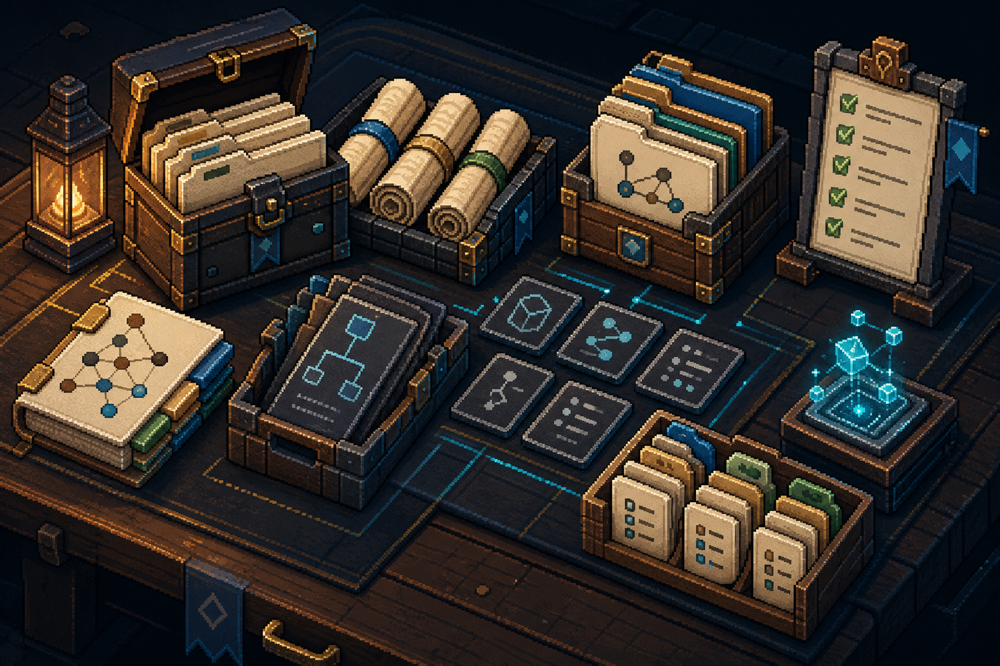

Evidence atlas for agent-built code
Map code chaos into repo docs.
Turn AI code runs into walkthroughs, evidence, references, and sync rules.
repo-docs install prompt
Install the repo-docs skill from this project:
https://github.com/YurunChen/repo-docs-skills
Make both repo-docs and repo-docs-zh available
in my agent skill directory.
Works with
- Cursor
- Claude Code
- Codex
- Copilot
- Windsurf
The skill builds a map from the route the code actually took.
Vibe coding gets the app moving quickly. Repo-Docs makes the path durable by writing down what happened, why it matters, and where the next reader can verify it.
Observe
Run a behavior through source, tests, data, or UI.
Name
Give the stable concepts their own module pages.
Anchor
Move exact lookup into references with source evidence.
Repair
When code drifts, update the smallest owning page.

What comes out of the workshop
The result is not a single long README. It is a small set of pages with different jobs, so narrative and lookup do not fight each other.
GitHub demo cases
Demo output from real GitHub repos.
These samples come from three popular public GitHub repositories that are not skill projects. Each panel shows generated repo-docs files, and every file opens the complete Markdown content grounded in inspected source.
Aider-AI/aider
repo-docs/ terminal edit run
Open full case
repo-docs/
walkthroughs/
modules/
references/
walkthroughs/terminal-edit-run.md
Loading generated file...
stackblitz-labs/bolt.diy
repo-docs/ chat streaming path
Open full case
repo-docs/
walkthroughs/
modules/
references/
walkthroughs/chat-to-stream.md
Loading generated file...
TabbyML/tabby
repo-docs/ completion service path
Open full case
repo-docs/
walkthroughs/
modules/
references/
walkthroughs/completion-request.md
Loading generated file...
Four quests, one rule: prove before writing.
Repo-Docs changes shape with the state of the project, but it keeps the same evidence discipline each time.
What happened?
First durable guide for a repo that already exists.
Repair stale understanding after code, config, data, or tests change.
Separate planned work, unknowns, and confirmed facts before code exists.
Adjust the guide when a repo question reveals the wrong reader model.
A small loop that keeps the atlas alive.
Open the guide page that should answer the question.
Check the current source, command, artifact, config, or data.
Update the owning page only when the gap is durable.
Reply from evidence and leave the repo easier to continue.
Quick start
Drop the atlas into your agent skill directory.
Use the English or Chinese skill, then ask your coding agent to build or sync docs for the repository you are working in.
repo-docs install prompt
Install the repo-docs skill from this project:
https://github.com/YurunChen/repo-docs-skills
Make both repo-docs and repo-docs-zh available
in my agent skill directory.